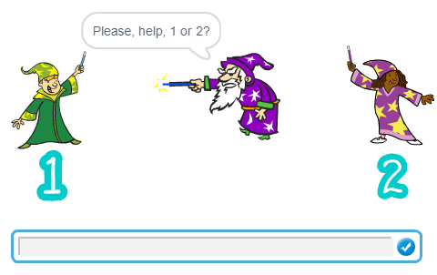
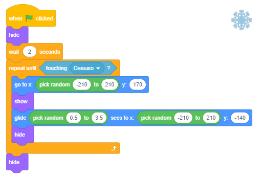
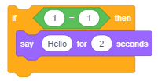
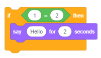
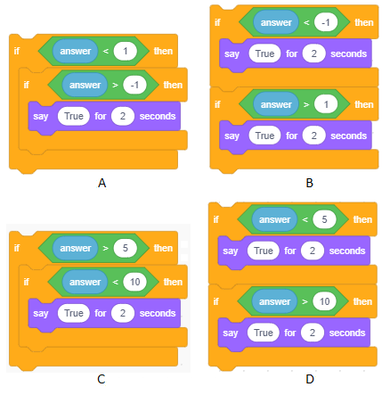

Po ose jo - Marrja e vendimeve¶

Në këtë mësim, ne do të mësojmë se si të përdorim blloqet e komandës që mundësojnë degëzimin dhe si të krijojmë kushte komplekse në bazë të të cilave merren vendimet. Ne do të sistemojmë blloqet që mundësojnë realizimin e elementeve themelorë të logjikës së programit në Scratch. Do të njohim më shumë blloqe nga grupi Sensing, si dhe do të tregojmë se si të përdorim redaktorin e figurës në mënyrën vektoriale
Komanda me Degët
Në projektet që kanë një strukturë të thjeshtë lineare, çdo komandë funksionon vetëm një herë.
Në mësimin e mëparshëm, mësuam për blloqet C - blloqet që përshkruajnë ciklin, të cilat lejojnë që komandat e tjera, të cilat futen në to, të ekzekutojnë shumë herë. Përveç blloqeve që përshkruajnë ciklin, blloqet që mundësojnë degëzimin gjithashtu kanë një hyrje për një skenar. Në varësi të plotësimit të kushteve të degëzimit, komandat e futura do të ekzekutohen apo jo.
Komanda e degëzimit që korrespondon me bllokun C ka një hyrje në skript, përveç fushës së hyrjes logjike të shprehjes. Ndërsa komanda e degëzimit që korrespondon me bllokun E ka dy hyrje të skriptit. Nëse kushti i degëzimit është përmbushur, komanda e parë do të lejojë ekzekutimin e komandave të futura në if … else “mouth”, dhe nëse jo, këto komanda nuk do të ekzekutohen, dhe programi do të vazhdojë në else pjesë e bllokut, e cila përshkruan se çfarë duhet të bëhet në rast se kushti nuk është përmbushur.

Komanda e dytë e ndarjes me kusht kushton disa komanda në varësi të faktit nëse gjendja e degës është përmbushur apo jo. Nëse kushti përmbushet, komandat nga dega NO nuk do të funksionojnë. Nëse kushti nuk plotësohet, komandat nga dega YES nuk do të ekzekutohen.
Prandaj, ndryshe nga programet lineare të thjeshta, ku secila komandë ekzekuton saktësisht një herë, dhe sythe ku ka komanda që mund të ekzekutojnë shumëfish (brenda trupit të ciklit), në programet me degë ka komanda që nuk do të funksionojnë, madje as një herë.

Elementët bazë të programimit logjik në Scratch
Siç thamë edhe më parë, shkrimet përshkruajnë sjelljen e objekteve, të cilave u janë bashkangjitur. Të gjithë skenarët e sjelljes, sado komplekse, përbëhen nga kombinime të elementeve themelorë të logjikës së programit, këto janë:
* sekuencat hap,
* përsëritje dhe
* degëzim.
Në shkencën e kompjuterave, në vend të termit skript ne përdorim termin algoritëm. Termi algoritëm është i njohur me shekuj, por ajo fitoi një kuptim të veçantë me futjen e kompjuterave. Mund të themi se një algoritëm është çdo grup udhëzimesh të kuptueshme dhe të sakta se si të zgjidhni një detyrë të caktuar.
Kalimi në rrugë, përgatitja e ushqimit duke ndjekur një recetë, duke bërë një telefonatë, duke zgjidhur një problem matematikor - gjithçka zbret në ekzekutimin e operacioneve elementare individuale në një urdhër të caktuar. Në algoritme, këto operacione elementare quhen komanda, hapa ose urdhra.
Një algoritëm mund të jepet, pak a shumë saktësisht, duke përdorur fjalë. Sidoqoftë, një regjistrim grafik i një algoritmi siguron një pasqyrë shumë më të mirë të strukturës dhe rendit në të cilin ekzekutohen udhëzimet. Skema grafike, e cila tregon me simbolet e saj natyrën e hapave individualë algoritmikë, quhet një diagram bllok. Diagrama bllok përdorin simbole të veçanta për të regjistruar llojet individuale të algorithmic steps.

Qëllimi kryesor i një diagrami bllok është të tregojë sekuencën e ekzekutimit të hapave individualë algoritëm. Ajo siguron një lidhje të qartë midis detajeve dhe tërësisë së algoritmit dhe e bën të lehtë zbulimin e gabimeve në strukturën e tij.
Struktura e një algoritmi mund të jetë linear, ose mund të përfshijë degë ose sythe. Në algoritme me një strukturë të thjeshtë lineare, hapat ekzekutohen njëra pas tjetrës, nga fillimi në fund. Në algoritme me degë, ka disa rrugë alternative ekzekutimi. Në varësi të të dhënave, disa hapa nuk do të kryhen fare. Në algoritme me sythe, disa hapa mund të kryhen shumë herë.
Figura e mëposhtme tregon një diagram bllok për llogaritjen e vlerës së x bazuar në një vlerë të dhënë hyrëse, me përdorimin e tre llojeve të algoritmit: me linear të thjeshtë, me degë dhe me sythe.

Shembujt janë marrë nga libri shkollor i matematikës për klasën e dytë të shkollës fillore. Mundohuni t’i përgjigjeni pyetjeve të mëposhtme bazuar në to.
Cila do të jetë vlera e х pas ekzekutimit të secilit prej algoritmeve nëse vlera e hyrjes është a = 5, dhe çfarë nëse është a = 16 ?
Në një algoritëm me degë, cili nga hapat nuk do të kryhet nëse a = 5, dhe cili nëse a = 16?
Sa herë х = х + 3 do të kryhet në një algoritëm me sythe nëse a = 5, dhe sa herë nëse a = 16?
Shifrat e mëposhtme tregojnë se si do të shkruheshin këto algoritme në Scratch.
Algoritmi i parë, i cili ka një strukturë lineare, korrespondon me skenarin që ka një sekuencë hapash.

Algoritmi i dytë, i cili ka degë, korrespondon me skenarin që ka degë.

Algoritmi i tretë, i cili ka sythe, korrespondon me skenarin që ka komanda për përsëritje.

Skriptet në Scratch duken si algoritme të shkruara me diagrame bllok.
Funksionet e bllokut nga grupi Sensing
Grupi Sensing është i përbërë nga blloqe që lejojnë projektin të pranojë të dhëna nga pajisje të ndryshme, ashtu si njerëzit përdorin shqisat për të mbledhur informacione nga mjedisi i tyre. Ekzistojnë blloqe, të cilat ruajnë të dhënat që korrespondojnë me të dhënat që një person do të mbledhte me sensin e prekjes, shikimit ose dëgjimit. Disa blloqe në këtë grup lejojnë që të nxiten veprime të ndryshme në varësi të pozitës së sprite, si dhe në varësi të kohës, datës, etj. Në këtë mësim, ne do të prezantojmë blloqet që:
* ruaj informacionin për pozicionin e sprite në lidhje me treguesin e miut dhe objektet e tjera, * aktivizoni të dhënat hyrëse duke përdorur tastierën, * ruaj informacionin për operacionet e vazhdueshme të kryera nga miu dhe tastiera.
Blloqet e mbetura nga grupi Sensing do të prezantohen në mësimet e mëposhtme, dhe një përmbledhje e plotë e funksioneve të tyre është dhënë në pjesën Shtojca.
 Studioni shembujt e mëposhtëm¶
Studioni shembujt e mëposhtëm¶
Shembulli 1 - Projekt “Selection”¶
Në këtë projekt, magjistari i vjetër duhet të zgjedhë një asistent.

Ai nuk mund të vendosë vetë se cilin asistent të zgjedhë, kështu që i kërkon përdoruesit ta ndihmojë atë duke futur numrin e njërit prej kandidatëve.
Kjo vlerë krahasohet me deklaratën e kushtëzuar që përmban numrin e kandidatit. Nëse përdoruesi hyn në numrin 1, magjistari do të kthehet në të majtë, drejt kandidatit numër 1; përndryshe, ai do të kthehet në të djathtë drejt kandidatit numër 2.

Skenari i plotë që përshkruan sjelljen e magjistarit është paraqitur në figurën më poshtë.

Shembulli 2 - Projekti “Dangerous Snowflakes”¶
Projekti Dangerous Snowflakes është një lojë e thjeshtë ku përdoruesi përpiqet të shpëtojë Snowman nga dëbora e madhe, e rrezikshme dhe vazhdimisht në rënie. Përdoruesi përdor çelësat e shigjetave në tastierë për të udhëhequr Snowman nga e majta në të djathtë duke u përpjekur të shmangë dëborën që bie me shpejtësi dhe kënde të ndryshme nga lartësia e ekranit. Nëse një lule dëbore prek burrë dëborën, ajo do të rritet, forma e saj do të deformohet dhe loja do të mbarojë.
Sprites dhe Sfondet
Kur filloni këtë projekt të ri, ngarkoni sfondin Shpatet dhe spritet Snowflake* dhe Snowman nga biblioteka. Vendosni sprite Snowman në këndin e poshtëm të djathtë të skenës, dhe ju mund të filloni të programoni.
Sjellja e një lule dëbore
Për të prezantuar pasiguri, është e nevojshme të mundësoni që dëbora të shfaqet në vende të ndryshme dhe të bjerë me shpejtësi të ndryshme dhe në drejtime të ndryshme.
Ne do ta arrijmë këtë duke përdorur bllokun 
Një lule dëbore duhet të shfaqet në krye të fazës dhe të rrëshqasë në fund. Komandat e mëposhtme përshkruajnë këtë lëvizje.

Komanda e parë vendos dëborën në pozicionin për të cilin x koordinata x do të gjenerohet në mënyrë të rastësishme. Komanda e tretë përcakton pozicionin drejt së cilës do të rrëshqasë dëbora midis 0.5 dhe 3.5 sekondave; kur të arrijë në këtë pozicion, fleta e borës do të zhduket.
Ne do të futim këtë pirg të komandave në cikël, i cili do të përsëritet derisa dëbora të prek Snowman. Kur floku i borës prek Snowman, loja do të marrë fund.
Sjellja e burrit të dëborës
Snowman ka tre skriptet bashkangjitur tij - reagime ndaj përdoruesit duke klikuar mbi flamurin e gjelbër dhe duke shtypur tastin e djathtë ose të majtë të tastit në tastierë.
Në fillim, Snowman jep udhëzime se si të luajë lojën, dhe në kontrollet e gjelbërta përgjithmonë nëse është prekur nga një lule dëbore. Nëse përgjigjja është po, do të transmetojë që loja ka mbaruar dhe do të ndalojë ekzekutimin e të gjitha skenarëve.

Për ta bërë lojën më tërheqëse, do të shtojmë efekte speciale. Kjo mund të bëhet duke përdorur blloqet nga grupi Looks.
Siç pamë në Shembullin 2 të mësimit Sekuencimi, komanda  mund të ndryshojë sprite në mënyra të shumta.
mund të ndryshojë sprite në mënyra të shumta.
Kur fleta e dëborës prek Snowman, ne do të ndryshojmë madhësinë e saj dhe do të aplikojmë efektet fisheye dhe ngjyrën. Ne do t’i përsërisim këto ndryshime pesë herë, duke ndalur shkurtimisht pas çdo ndryshimi (figura A). Për t’u siguruar që Snowman nuk është deformuar kur programi fillon të kandidojë përsëri, në fillim, ne do të pastrojmë të gjitha efektet grafike dhe do të vendosim madhësinë në 100% (figura B).

hembulli 3 - Projekti “Day and Night”¶
Në këtë projekt, dy sprites, një mace dhe një qen, sillen ndryshe në varësi të faktit nëse është ditë apo natë.
Ka dy shtëpi të vogla në skenë; njëra i përket maceve dhe një qenit. Janë shtuar dy sfonde - day dhe night.
Në sfondin day ju mund të shihni diellin, qiellin blu të lehtë dhe bar. Në sfondin day gjithçka, përveç shtëpive, është blu e errët, dhe ju mund të shihni yje dhe një hënë gjysmëhënës që depilon në qiell. Sfondet e ditës dhe të natës alternojnë çdo 5 sekonda.
Kur është ditë, macja dhe qeni dalin nga shtëpitë e tyre dhe ndjekin njëri-tjetrin. Macja vrapon përreth në një rreth dhe qeni drejton macen dhe përpiqet t’i afrohet asaj.
Kur është natë, macja dhe qeni kthehen në shtëpitë e tyre dhe mbajnë qetësi.

Krijimi i Sprites
Fshini burimin Sprite1 dhe më pas ngarkoni burimin Dog2 dhe burimin Cat2 nga biblioteka. Qeni ka tre kostume, por ne do të përdorim vetëm y të parat, kështu që ju mund të fshini të tretin. Macja ka vetëm një kostum, dhe duke qenë se duam të bëjmë një animacion lëvizjeje, do të na duhet të vizatojmë një tjetër. Për të krijuar kostumin e dytë për macen, ne do të përdorim redaktorin e pikturave në mënyrën vektoriale. Duke klikuar me të djathtën në mprehtësin e maceve, ne do të hapim menunë e shkurtore nga e cila mund të zgjedhim opsionin Copy.
Në këtë mënyrë marrim një kostum të ri, Cat3, të cilin do ta ndryshojmë me hapat e paraqitur në figurën vijuese.

Krijimi i sfondit
Klikoni në butonin Zgjidhni një sfond (në të djathtë, ngjitur me listën e sprite), dhe pastaj zgjidhni opsionin Paint.
Nga paleta, mjetet që përmbajnë vektor zgjedhin  , dhe mënyra e vizatimit duhet të ketë të fikur ngjyrën e mbushjes. Vizatoni një shtëpi të vogël, siç tregohet në figurën e mëposhtme.
, dhe mënyra e vizatimit duhet të ketë të fikur ngjyrën e mbushjes. Vizatoni një shtëpi të vogël, siç tregohet në figurën e mëposhtme.

Meqenëse keni përdorur mjetin  për të grupuar objektet, të cilat përbëjnë shtëpinë, mund të përdorni mjetin
për të grupuar objektet, të cilat përbëjnë shtëpinë, mund të përdorni mjetin  për ta kopjuar atë. Pasi ta keni bërë këtë, vendosni kopjen në këndin e poshtëm të djathtë të skenës dhe shtëpinë origjinale në këndin e sipërm të majtë.
për ta kopjuar atë. Pasi ta keni bërë këtë, vendosni kopjen në këndin e poshtëm të djathtë të skenës dhe shtëpinë origjinale në këndin e sipërm të majtë.
Pastaj vendosni madhësinë e të dy sprites që të mund të futen brenda shtëpive të tyre.
Tani, ne do të kalojmë në pikturë, dhe ne do të përdorim mjetin  . Zbatimi i këtij mjeti, kur bëhet fjalë për plotësimin e zonave të caktuara, nuk është i njëjtë me mënyrën e rasterit (bitmap).
Nëse zona nuk është e mbyllur, në modalitetin e rasterit bojë do të “rrjedh” në tërë imazhin. Në mënyrën vektoriale, kjo nuk ndodh - nuk do të jeni në gjendje ta pikturoni atë fare.
Kjo është arsyeja pse së pari duhet të “mbyllni” zonën që dëshironi të pikturoni.
Kjo është bërë duke përdorur mjetin , ju duhet të klikoni në imazh, dhe pastaj ju zgjidhni pjesën e figurës që nuk është e lidhur (2) dhe bashkëngjitni atë në pjesën tjetër të figurës (3). Pastaj, duke përdorur mjetin , ju mund të pikturoni si brendësinë (4) ashtu edhe linjat që formojnë zonën (5).
. Zbatimi i këtij mjeti, kur bëhet fjalë për plotësimin e zonave të caktuara, nuk është i njëjtë me mënyrën e rasterit (bitmap).
Nëse zona nuk është e mbyllur, në modalitetin e rasterit bojë do të “rrjedh” në tërë imazhin. Në mënyrën vektoriale, kjo nuk ndodh - nuk do të jeni në gjendje ta pikturoni atë fare.
Kjo është arsyeja pse së pari duhet të “mbyllni” zonën që dëshironi të pikturoni.
Kjo është bërë duke përdorur mjetin , ju duhet të klikoni në imazh, dhe pastaj ju zgjidhni pjesën e figurës që nuk është e lidhur (2) dhe bashkëngjitni atë në pjesën tjetër të figurës (3). Pastaj, duke përdorur mjetin , ju mund të pikturoni si brendësinë (4) ashtu edhe linjat që formojnë zonën (5).

Meqenëse kemi përdorur mjetin për vizatim, nuk duhet të ketë probleme kur pikturojmë.
Në figurën e mëposhtme, ju mund të shihni rezultatin e pikturimit të pjesëve të shtëpisë dhe se si bëhet.

Kur të përfundoni pikturimin e shtëpive, shumëzoni këtë sfond.
Ne do të shtojmë në sfondin e parë, kështu që përfaqëson kohën e natës, dhe të dytën, kështu që përfaqëson ditën.
Krijimi i sfondit të natës
Vizatoni një drejtkëndësh të mbushur blu të errët në të gjithë fazën, pastaj duke përdorur mjetin Back  vendosni këtë drejtkëndësh pas të dy shtëpive. E njëjta gjë mund të bëhet me mjetin Layer back
vendosni këtë drejtkëndësh pas të dy shtëpive. E njëjta gjë mund të bëhet me mjetin Layer back  , por do të duhet të klikoni në skenë sa herë që ka shtresa në figurë.
Kur të dy shtëpitë janë të dukshme, mund të filloni të vizatoni Hënën dhe yjet.
, por do të duhet të klikoni në skenë sa herë që ka shtresa në figurë.
Kur të dy shtëpitë janë të dukshme, mund të filloni të vizatoni Hënën dhe yjet.
Një hënë e gjysmëhënës që depilon mund të vizatohet duke vizatuar së pari një rreth të verdhë të mbushur (1) dhe më pas duke vizatuar pjesërisht një rreth më të madh të mbushur me ngjyrën e sfondit (2) mbi të.
Një yll mund të krijohet duke vizatuar një trekëndësh të bardhë (3), të cilin pastaj mund ta kopjojmë dhe rrotullojmë (4) dhe në fund ta mbushim tërë formën me të bardhë (5).

Tani ju mund të kopjoni yjet e përfunduar dhe t’i rregulloni ato rreth skenës, disa prej tyre mund t’i bëni më të vogla dhe disa më të mëdha. Me këtë mbaron sfondi i natës.

Krijimi i sfondit të ditës
Vizatoni diellin me mjetin  , dhe për rrezet, mund të përdorni mjetin
, dhe për rrezet, mund të përdorni mjetin  . Pastaj vizatoni një drejtkëndësh të madh të mbushur me ngjyrë blu të lehta, gjerësia e drejtkëndëshit duhet të jetë e njëjtë me fazën. Vendosni sa më shumë shtresa prapa sa të jetë e nevojshme për të parë të gjitha detajet në skenë.
(Nëse do të vizatonit qiellin e parë, dhe diellin e dytë, do të ishit në gjendje ta vendosni drejtkëndëshin e qiellit në shtresën e duhur më shpejt. Në këtë mënyrë duhet të ktheheni nën të gjitha rrezet e diellit).
. Pastaj vizatoni një drejtkëndësh të madh të mbushur me ngjyrë blu të lehta, gjerësia e drejtkëndëshit duhet të jetë e njëjtë me fazën. Vendosni sa më shumë shtresa prapa sa të jetë e nevojshme për të parë të gjitha detajet në skenë.
(Nëse do të vizatonit qiellin e parë, dhe diellin e dytë, do të ishit në gjendje ta vendosni drejtkëndëshin e qiellit në shtresën e duhur më shpejt. Në këtë mënyrë duhet të ktheheni nën të gjitha rrezet e diellit).
Pastaj vizatoni një drejtkëndësh të mbushur me jeshil, aq i gjerë sa skena, vizatoni barin, ndërsa dërgojeni në sfondin e figurës.
Procesi i krijimit të sfondit të ditës është paraqitur në figurën më poshtë.

Meqenëse ne kemi bërë krijimin e sfondit gjatë ditës, tani mund të fillojmë të shkruajmë skenarin, i cili do të përcaktojë sjelljen e sprites.
Sinkronizimi i ngjarjeve në Ditën dhe Natën e Projektit
Në këtë projekt, sjellja diktohet nga sfondi. Ajo transmeton mesazhet day dhe night, të cilave u përgjigjen të dy spritet.

Shifrat e mëposhtme paraqesin shkrime të shtuara në sprites, nga të cilat mund të shihni se si reagojnë ndaj këtyre mesazheve.


 E kuptuat?¶
E kuptuat?¶
Pyetja 1¶
- po
- jo
- Kushti1=1 nuk përmbushet.
Q-1: A do të thotë sprite Hello pas ekzekutimit të kushtit të komandës?
Pyetja 2¶
- po
- Meqenëse vlera e shprehjes 1 = 2 është gjithnjë e gabuar, komanda nga dega YES nuk do të funksionojë kurrë.
- jo
Q-2: A do të thotë sprite Hello pas ekzekutimit të kushtit të komandës?
Pyetja 3¶
- 5
- Gabim 5<5
- -5
- Saktë.
- 0
- Saktë.
- 10
- Gabim 10<5.
Q-3: Cila nga përgjigjet e përdoruesit do të lejojë ekzekutimin e komandës në degën YES?

Pyetja 4¶
- sill një çadër.
- nuk do thuhet asgjë
- Në atë rast, kushti për degëzim plotësohet.
Çfarë do të thotë sprite nëse, kur pyeten A bie shi?, Përgjigjet përdoruesi po?
Pyetja 5¶
- Kushti përmbushet.
- Kushti nuk përmbushet.
- Meqenëse vlera e shprehjes А = А është gjithmonë e vërtetë, komanda nga dega YES do të ekzekutohet
Q-5: Çfarë do të thonë sprite pas ekzekutimit të komandës kusht?

Pyetja 6¶
- po
- Meqenëse vlera e shprehjes А = B është gjithmonë e gabuar, komanda nga dega NO do të ekzekutohet.
- jo
Q-6: A do të shfaqet sprite pas ekzekutimit të komandës kusht?

Pyetja 7¶
- të ndryshme pavarësisht nga pozicioni i sprite
- Në të dyja rastet, kushti që duhet të përmbushet për fjalinë "Ju jeni në qendër të fazës" që duhet thënë, është e njëjtë.
- e njëjta pavarësisht nga pozicioni i sprite
- e ndryshme nëse y nuk është 0
- Në këtë rast, kushti nuk plotësohet në asnjë prej blloqeve (A) ose (B), dhe "Ju jeni në qendër të fazës" nuk do të thuhet.
- e ndryshme nëse x nuk është 0
- Në këtë rast, kushti nuk plotësohet në asnjë prej blloqeve (A) ose (B), dhe "Ju jeni në qendër të fazës" nuk do të thuhet.
Q-7: Cili është rezultati i ekzekutimit të komandave të bllokut (А) dhe (В)?

Pyetja 8¶
- Në mënyrë të qartë përcakton që х = 0 dhe у = 0.
- Këto janë koordinatat e disa prej pikave në diagonale të sistemit të koordinatave, ato mund të jenë (0,0), por ato nuk duhet të jenë.
- Këto janë koordinatat e disa prej pikave në boshtin x ose boshtin y. Mund të jetë gjithashtu pika ku ato kryqëzohen, por nuk ka pse të jetë.
Q-8: Cila nga komandat e gjendjes ka gjendjen e duhur për thënien - koordinatat e vendndodhjes së sprite janë (0,0), d.m.th. spraza është në qendër të fazës? (Zgjidhni të gjitha përgjigjet e sakta)

Pyetja 9¶
- Pjesa e mbetur, pasi numri është ndarë me 6, është 0.
- Numri 2 dhe 3 plotësojnë këtë gjendje, por ato nuk mund të ndahen me 6.
- Numri 11 e plotëson këtë gjendje, por nuk mund të ndahet me 6.
- Numri mund të ndahet nga të dy faktorët kryesorë të numrit 6.
Në projektin Marrja e një vendimi treguam se si përdoret operacioni mod për të kontrolluar nëse një numër i caktuar mund të ndahet me 2. Cila nga kushtet e mëposhtme ju lejon të kontrolloni nëse numri që vendosni mund të ndahet me 6? (Zgjidhni të gjitha përgjigjet e sakta)

 Try it!¶
Try it!¶
Ushtrimi 1¶
Kur përdoruesi pritet të fusë një lloj informacioni, duhet të bëjmë një pyetje që sugjeron formën e pritur të përgjigjes, për shembull: “Vendosni datën tuaj të lindjes (dd / mm / yy)”.
Formuloni pyetjet e dhëna për hyrjen:
а) Një numër midis 1 dhe 10
b) Një numër midis -1.0 dhe 2.25
c) Emri dhe mbiemri
d) Pesha
e) Lartësia
Ushtrimi 2¶
Programi, i cili duhet të llogarisë peshën ideale, kërkon që përdoruesi të futë peshën e tij / saj (në kg) dhe gjatësinë (në cm).
Shkruani pjesë të programit që kontrollojnë nëse përdoruesi ka hyrë në të dhënat e sakta të peshës, p.sh. nga intervali [40,160] dhe lartësia, p.sh. [140.210].
Ushtrimi 3¶
Shkruani cilat duhet të jenë argumentet e operacionit që ajo të gjenerojë numra nga grupi:
а) {0, 1}
{0, 1, 2, 3, … , 10}
{–2, 0, 2, 4, 6, 8}
{0, 10, 20, 30, … , 100}
{0, 0.1, 0.15, 0.26, 0.38, … , 1.0}
Kontrolloni përgjigjet tuaja duke provuar se çfarë do të kthehet operacioni i duhur për secilin shembull në cikël që duhet të përsëritet 5 herë.
Udhëzim:
Tërë blloku i komandave është dhënë për shembullin a), dhe për të tjerët, vetëm pjesa që gjeneron numra që duhet të futen në bllokun say.
Nga shembulli e), ju mund të shihni se është e mjaftueshme të vendosni vetëm një kufi që ka një pikë dhjetore për të gjeneruar numra dhjetorë.

Ushtrimi 4¶
Shkruaj kushtin e komandës me një gjendje komplekse ekuivalente me përbërjet e mëposhtme të komandave të gjendjes:
Kontrolloni përgjigjet tuaja duke i provuar ato në mjedisin Scratch.
Ushtrimi 5¶
Krijoni një mini-projekt të quajtur Greater në të cilin sprite i kërkon përdoruesit të fusë një numër midis 1 dhe 100.
Programi zgjedh një numër (duke përdorur bllokun e operatorit të numrave të rastit) gjithashtu midis 1 dhe 100 dhe pastaj i thotë përdoruesit numri i të cilit është më i madh.
Dialogu duhet të fillohet duke klikuar në sprite.
Instruksion:

 Debug!¶
Debug!¶
Bug 1¶
- Question
Studenti dëshironte të krijonte një skenar që lejonte lëvizjen e degës të kontrollohej nga shigjetat. Ai / ajo shkroi programin e treguar në figurën në të majtë. Pastaj studenti vuri re që komanda
 përsëritet 4 herë, kështu që ai / ajo e ndryshoi skenarin në programin e paraqitur në figurën në të djathtë. Sidoqoftë, studenti nuk arriti sjelljen e dëshiruar të sprite. Ku bëri një gabim studenti?
përsëritet 4 herë, kështu që ai / ajo e ndryshoi skenarin në programin e paraqitur në figurën në të djathtë. Sidoqoftë, studenti nuk arriti sjelljen e dëshiruar të sprite. Ku bëri një gabim studenti?

Përgjigja:
Në programin e ndryshuar, komanda do të rrjedhë vazhdimisht dhe sprite do të lëvizë në drejtimin që u zgjodh e fundit, pavarësisht nëse çelësi me atë drejtim është shtypur apo jo.
Bug 2¶
- Question
Studenti dëshironte të ndryshonte sjelljen e kandidatëve për pozicionin e asistentit të magjistarit në projektin “Përzgjedhja”. Kur magjistari zgjedh vajzën, djali duhet të mendojë me vete “Pse e zgjodhi atë?”. Kjo është arsyeja pse ai / ajo shtoi skenarin e mëposhtëm në sprite djali. Sidoqoftë, mendimi i shtuar u vu në fillim të programit, përpara se magjistari të zgjidhte ndonjë. Si mund të koordinoni aktivitetet e djalit dhe magjistarit?

Përgjigje:
Një mënyrë është që magjistari të transmetojë mesazhin që ai ka marrë vendimin e tij, dhe pastaj të lejoni që djali të reagojë kur të marrë këtë mesazh. Sigurisht, nëse nuk duam që djali të reagojë kur magjistari e zgjedh atë, atëherë duhet ta zgjerojmë këtë komunikim duke shtuar pjesën ku programi do të kontrollojë se cili nga kandidatët u zgjodh.
Bug 3¶
- Question
Studenti dëshironte që sprita e tij, e cila kontrollohet me çelësat e shigjetës majtas dhe djathtas, të vazhdojë të thotë fjalën “majtas” ndërsa është në gjysmën e majtë të skenës, dhe fjalën “djathtas” ndërsa është në gjysmën e djathtë të skena. Ai / ajo shtoi shkrimet e mëposhtme në sprite, por vazhdonte të thoshte të njëjtën fjalë, pavarësisht se ku ishte në skenë ku ishte. ShoÇfarë duhet të ndryshohet në skriptet?

Përgjigje:
Programi kontrollon në cilën gjysmën e fazës së sprite ndodhet vetëm në fillim. Ky kontroll duhet të futet në një lak përgjithmonë.

{kind=link}
{kind=link}
{kind=link}
{kind=link}
{kind=link}
{kind=link}
{kind=link}
 Përmbledhje¶
Përmbledhje¶
Në këtë mësim, mësuam për urdhrat e degëzimit që ju lejojnë të krijoni shkrime degëzuese. Ne prezantuam blloqet nga grupi Sensing dhe treguam se si komanda për futjen e të dhënave duke përdorur tastierën është ekzekutuar në Scratch. Ne gjithashtu mësuam se si të sinkronizojmë sjelljen e sprites duke përdorur transmetimin e mesazheve. Për më tepër, ne treguam se si të përdorim mjetin në mënyrën vektoriale të redaktorit të brendshëm të bojrave.
Konceptet e reja: struktura me degë, gjendje komplekse.
Komandat Scratch:  -
-  ,
,  , ;
, ;  -
-  ,
,  ;
;  - ; -
- ; -
 Krijoni projekte¶
Krijoni projekte¶
Projekti 1 – “Falling Apples”¶
Krijoni një lojë me një skenar të ngjashëm me projektin “Snowflakes Dangerous”. Rrjedha kryesore e këtij projekti duhet të jetë një djalë, një lëvizje e të cilit kontrollohet me tastet e shigjetës së majtë dhe të djathtë. Ai duhet të shmangë mollët që shfaqen në pozicione të rastësishme në pjesën e sipërme të fazës dhe të rrëshqasin në pozicione të rastësishme në pjesën e poshtme të fazës. Nëse një mollë prek djalin në çdo pikë, loja do të marrë fund, nëse nuk e prekin atë, ata fshihen dhe rishfaqen në pjesën e sipërme të fazës dhe rrëshqasin poshtë. Shpejtësia e rrëshqitjes gjithashtu duhet të vendoset në mënyrë të rastësishme, për shembull, midis 1 dhe 3 sekondave. Për ta bërë lojën më tërheqëse, pasi të keni mbaruar bërjen e mollës së parë, shumëzojeni, kështu që ka, për shembull, 3 mollë që përsërisin sjelljen e duhur.
Project 2 - “Hungry Shark”¶
Krijoni një projekt në të cilin peshkaqeni po ndjek peshk. Peshkaqeni duhet të lundrojë majtas në të djathtë vazhdimisht, dhe kur presioni i hapësirës, ai duhet të lëvizë lart. Nëse sprite peshkaqeni prek një peshk, peshqit do të zhduken, dhe pastaj rishfaqen pas 3 deri në 5 sekonda në një pozicion të rastit. Kohëzgjatja e ndryshme e pauzës midis zhdukjes dhe rishfaqjes së një peshku dhe lokacioneve të ndryshme mund të arrihet duke përdorur operacionin numrin e rastit. Sprite (Shark2) ka tre kostume, kështu që ndryshimi i kostumit mund të përfaqësojë reagimin e peshkaqenit kur prek një peshk. Atribuoni lëvizje të ndryshme tek spritat e peshkut, sprite cancer dhe kandil deti. Kandil deti duhet të lëvizë lart e poshtë, gaforret duhet të lëvizin majtas dhe djathtas, dhe peshqit duhet të lëvizin me shpejtësi të ndryshme. Të gjitha sprites - peshkaqen, lloje të ndryshme të peshkut, gaforret dhe kandil deti, si dhe sfondi mund të merren nga bibliotekat e sprites dhe sfondit. Ju mund të bëni lloje të ndryshme të peshkut duke përdorur kostume të ndryshme të sprite fish.
Projekti 3 - “Një qen dhe një mace”¶
Krijoni një projekt ku do të përdorni dy sprites - një qen dhe një mace, si dhe dy prapavijë. Në fillim, macja ngadalë lëviz majtas dhe djathtas midis skajeve të skenës, dhe mendimet e saj duhet të shfaqen në re në bllokun think. Pas 10 sekondash, duhet të shfaqet pllaka e qenit, ajo fillon të leh, dhe ajo tremb macen. Macja fillon të vrapojë dhe kur arrin skajin e skenës me sfondin e parë, duhet të shfaqet sfondi i dytë. Kur macja kalon të gjithë fazën me sfondin e ri ajo duhet të zhduket, kjo do të thotë se macja arriti të fshihej. Vetëm kur të bëhet kjo, qeni do të shfaqet në skenë, të ndalet dhe një pikëpyetje do të shfaqet në re të bllokut think.
Për të krijuar këtë projekt, do t’ju duhet:
shkruaj shkrime që përshkruajnë sjelljen e maceve,
ngarkoni qenin nga qenka bibliotekë dhe shtoni një skedar audio që leh së bashku me skriptet që përshkruajnë sjelljen e tij,
ngarkoni dy prapavijë, fushën e lojës dhe kopsht-shkëmb: e para ku macja takon qenin dhe e dyta ku macja shpëton kur dëgjon lehjen e qenit,
sinkronizoni lehjen e qenit dhe reagimin e maceve ndaj tij - macja ik,
sinkronizoni “sjelljen” e dy prapavijave, d.m.th. momentin kur ato ndryshojnë.